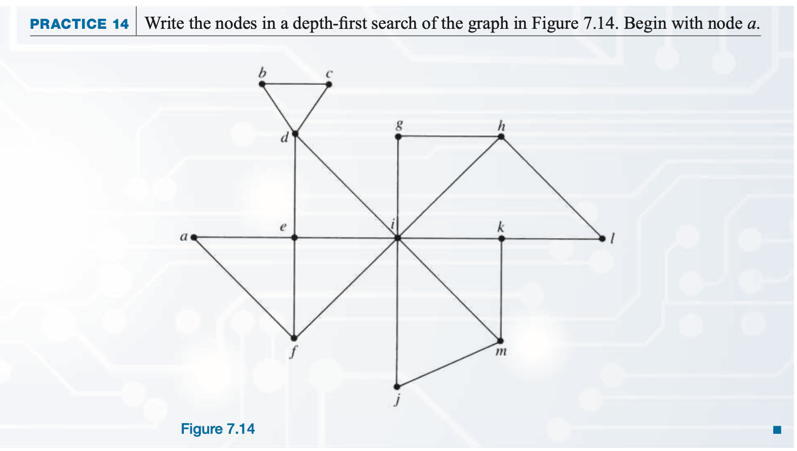

Chapter 7: Graph Algorithms
Section 7.4 Traversal Algorithms
In this section we deal with a simpler problem--we only want to write down all the nodes of a simple, connected
graph G in some orderly way. This means we must find a path that visits each node at least once, but we can visit it
more than once if we don't write it down again. We can also retrace arcs on the graph if necessary, and clearly this
would in general be necessary if we were to visit each node in a tree. This process is called
graph traversal
. We already have several mechanisms for tree traversal (Section 6.2). The two algorithms in this section
generalize traversal to apply to any simple, connected graph.
Breadth-First Search
In breadth-first search, beginning at an arbitrary node a, we first fan out from node a to visit nodes that are
adjacent to a; then we fan out from those nodes, and so on, almost like the concentric circles of ripples in a pond.
Figure 7.15 shows the first few nodes visited in the same graph as Figure 7.13, this time using breadth-first
search.
To write the breadth-first search algorithm in an elegant fashion, we will use a
queue
structure. A queue is simply a line in which new arrivals are added at the back and departures take place at
the front
Practice
Please write the nodes in a breadth-first search of the graph in Figure 7.14.

Reference
saylor academy